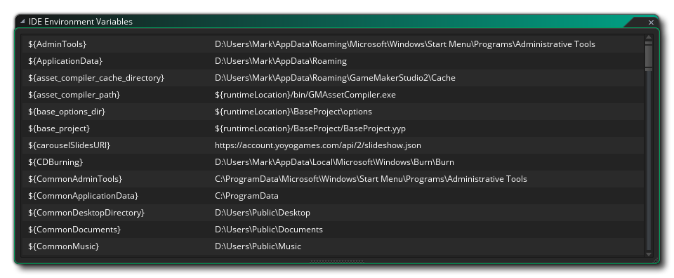

Este menú es para abrir las ventanas IDE acopladas generales. Como los muelles se pueden reorganizar y los contenidos se pueden eliminar como ventanas independientes o incluso se pueden cerrar por completo, esta ventana le permite volver a abrirlos si considera que los necesita para cualquier cosa. Las ventanas que se pueden abrir desde aquí son la ventana de Recursos y todas las ventanas de salida diferentes (salida, búsqueda, SCM, puntos de interrupción y errores de compilación / sintaxis).
A continuación, puede abrir la lista de Windows reciente y también existe la opción de abrir la ventana Variables de entorno donde puede ver las diferentes rutas a las que apuntan las diversas variables de entorno utilizadas en las Preferencias. Estas variables no se pueden editar (ni su nombre ni su ruta / configuración) pero puede seleccionar y copiar / pegar cualquiera de ellas para usarlas en otro lugar. 
Finalmente tiene la opción de abrir Tutorial Windows. Esto volverá a abrir cualquier ventana que esté relacionada con un proyecto de tutorial que haya abierto, pero solo si el proyecto es uno que se creó como parte de un tutorial (si no, esta opción no estará disponible). Para obtener información sobre cómo crear sus propios proyectos de tutoriales, consulte la sección en Marketplace (ya que todos los tutoriales se crean, alojan y descargan desde allí).